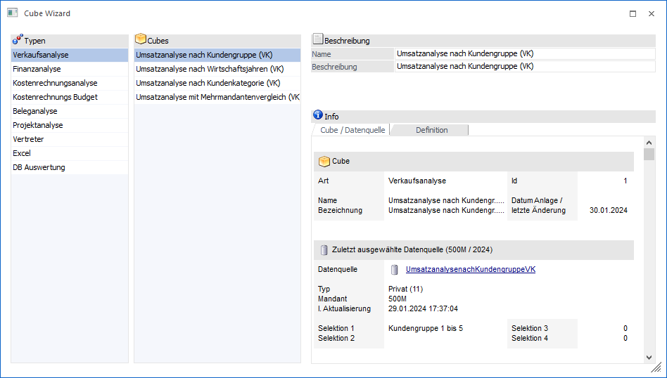

Der "Cube Wizard" ermöglicht es Datenwürfel (sogenannte "OLAP-Cubes") ohne Kenntnisse über die WinLine Datenbank zu erstellen. Es müssen nur die gewünschten Datenfelder in Form von "Measures" (Zahlenfelder) und "Dimensionen" (alphanumerische Felder) ausgewählt werden, welche im Cube enthalten sein sollen. Der Wizard, welche über den Menüpunkt…
1 WinLine INFO
1 Business Intelligence
1 Olap Wizard
… aufgerufen wird, übernimmt den Rest. Eine detaillierte Beschreibung der Cube-Anlage können Sie den folgenden Kapiteln entnehmen:
ü Mandanten / Wirtschaftsjahre

Was bedeutet OLAP?
Die Abkürzung "OLAP" steht für "OnLine Analytical Processing" und beschreibt die Datenmodellierung in multidimensionalen Strukturen zur Datenanalyse.
Wie funktioniert OLAP?
Um auch große Datenmengen in sehr performanter Weise auswerten zu können, werden die Auswertestrukturen hier grundsätzlich vordefiniert, d.h. es werden alle sogenannten "Dimensionen" (entsprechen den späteren Zeilen und Spalten der Auswertung) und "Measures" (entsprechen den Werten, die anschließend berechnet werden sollen) festgelegt, bevor die Auswertung selbst gestartet wird.
Aufgrund dieser festgelegten Auswertungsstruktur wird nun ein sogenannter "Datenwürfel" erstellt, in dem sämtliche Summenwerte für die zuvor angegebenen Dimensionen bereits aufbereitet abgespeichert werden. Dabei wird nur zur Erstellung des Datenwürfels Rechnerleistung in Anspruch genommen, die Auswertung (der Cube) selber kann in Sekundenschnelle angepasst werden
Da der Datenwürfel mehrere Dimensionen (z.B. Vertreter, Artikelgruppe, Kundengruppe, Jahr, Periode, Kalenderwoche, usw.) in Verbindung mit den gewünschten Werten (Rohertrag, Umsatz, verkaufte Menge) aufbereitet und im Datenwürfel abgespeichert hat, kann in der Auswertung selbst mit Drag & Drop der Dimensionen jede denkbare Verknüpfung dargestellt werden.
Leistungsumfang der CWL Olap-Module
Folgende Datenwürfel können direkt aus der WinLine mit Hilfe eines Assistenten (Programmbereich "Olap Wizard") erstellt und ausgewertet werden:
ü
Verkaufsanalyse
Aufbereitung der Umsätze, Roherträge und
Mengen, z.B. nach Artikelgruppen, Artikeluntergruppen, Vertretern, Kunden,
Kundengruppen, Provisionscodes, Artikeln, Kostenstellen, Kostenarten,
Kostenträgern oder Perioden.
ü Finanzanalyse
Darstellung der
Journaldaten (Buchungsbetrag, Steuerbetrag), z.B. nach BWAs, BKZs, Konten oder
Perioden (je nach Selektion: Jahr, Monat, Kalenderwoche, Tag).
ü
Kostenrechnungsanalyse
Vollkosten, Teilkosten und Fixkosten auf
Basis von Kostenarten und -gruppen, Kostenträger und -gruppen, Kostenstellen und
-gruppen sowie Einheiten
ü Kostenrechnungs Budget
Hierüber
können angelegte Budget-Szenarien mit Einheiten und Beträgen aus dem Menüpunkt
"WinLine KORE - Stammdaten - Budget - Budget Verwaltung" ausgewertet werden.
ü Beleganalyse
Auswertung
aller Belege, z.B. nach Belegstufen, Datum, Konten, Belegnummern, Kostenstellen,
Kostenträgern, Gebieten, Artikelnummern, Artikelgruppen oder
Artikeluntergruppen.
ü Projektanalyse
Auswertung aller
Projekte und den dazugehörigen Belegen.
ü Vertreter
Ausgabe der Provision
und Bemessung der Vertreter, z.B. nach Fakturennummer, Konto, Artikel oder
Verkaufsgebiet.
ü Excel
Aufbereitung von
Werten aus einer externen Excel Datei.
ü DB Auswertungen
Mit dem
Cube-Modul "DB-Auswertungen" wird der Zugriff auf sämtliche Informationen in der
SQL-Datenbank ermöglicht, wodurch Analysen erstellt werden können, welche
applikationsübergreifend verschiedene Mandanten und Wirtschaftsjahre
berücksichtigen.
Welche Bereiche der Datenbank hierbei berücksichtig werden
sollen, erfolgt durch eine Definition in Form eines SQL-Statements (maximal
10.000 Zeichen).
Können diese Daten auch offline ausgewertet werden?
Aus der WinLine heraus kann auch ein sogenannter Offline-Cube erzeugt werden, d.h. die im Datenwürfel errechneten und abgespeicherten Informationen können in einer Datei abgelegt werden. Diese Datei kann dann auf einem beliebigen anderen PC, mit Hilfe eines Viewer-Programmes, auch außerhalb der WinLine-Installation ausgewertet werden.
Zusammenfassung
WinLine OLAP kann mit "schnelle Auswertung gemeinsam genutzter mehrdimensionaler Informationen (Fast analysis of shared multidimensional information)" zusammengefasst werden.
Das Hauptobjekt der WinLine OLAP-Applikation ist der "Cube".
Ein Cube ist eine Form der Datenhaltung, bei der Daten nach mehreren verschiedenen Kriterien ausgewertet werden können.
Zur Veranschaulichung der Multidimensionalität der Datenbasis wird diese oft als dreidimensionaler Datenwürfel (oder auch Cube genannt) abgebildet.
Dieser "Cube" besteht aus:
ü einer Datenquelle
ü Dimensionen
ü Measures
Mit dem CWL-OLAP Modul können Sie die Daten der Finanzbuchhaltung, der Verkaufs- und Einkaufsstatistik, der Kostenrechnung, sowie des WinLine-Projekts sowohl innerhalb, als auch außerhalb der Produkte der WinLine auswerten.
Dabei können alle im Umfang der Auswertung verfügbaren Auswertedimensionen einander in beliebigen Kombinationen gegenübergestellt werden, wodurch sich auch extrem komplexe Fragestellungen (z.B. Mehrjahresvergleiche, Quartalsauswertungen, Gruppenstatistiken, etc.) elegant und auch bei sehr großen Datenständen sehr performant abbilden lassen.
WinLine mobile
In der WinLine mobile können mit Hilfe des Cube Wizards bestehende Cubes ausgegeben werden (z.B. in Form eines Power Reports). Die Neuanlage oder Bearbeitung von bestehenden Cubes wird nicht unterstützt!